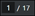

Preview an Advanced Report
- The History area displays the executed advanced reports in different formats (PDF, Excel, or Both).
- To preview an executed advanced report in the preview area, from the History area, either select the executed advanced report and preview or adjacent to the PDF entry that you want to preview, select and then select Preview.
- The preview area displays the preview of an advanced report in the following formats:
- PDF format: PDF report along with timestamp is generated successfully and its preview is displayed in the preview area.
- Excel format: The Excel report document along with the timestamp is generated successfully but its preview is not displayed in the preview area. You can download the advanced report locally.
- Both formats: The generated report is displayed in the preview area in PDF format. The history group entry can be expanded by showing two sub-entries, one for PDF and one for Excel. - (Optional) For an advanced report, from the preview area, you can use the different incorporated controls such as Print PDF , zoom in () , zoom out (), Fit to page , Number of pages

, Rotate counterclockwise, download , and (that displays different settings such as Two page view, Document properties, Annotations).
- The content of the selected PDF format is displayed in the preview.